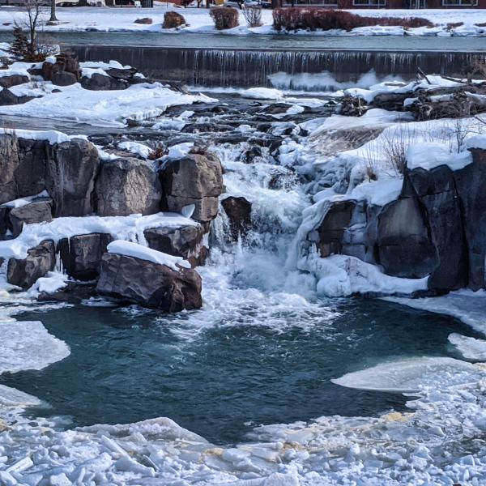

Fish Haven Idaho
Weather Summary
Currently:
Temperature: °F
Humidity: %
Windchill: °F
Wind Speed: mph
5 Day Forecast
Little Fish Haven, Idaho, is paradise for residents
Kurt Friedemann Idaho State Journal - Dec 26, 2000
FISH HAVEN, Idaho — It's an undiscovered paradise. Most people who drive by recognize the raw beauty of a place ringed by high desert mountains and bordered by the shores of a vast natural lake.
In winter the hills outside this small paradise echo with the sharp whine of snow machines and in the summer thousands of tourists ply the lake's bright blue waters with water skis or fishing poles.
But they don't live there. It's different living in Fish Haven.
The little town sits just on the Idaho side of U.S. Highway 89 tucked in between Bear Lake's west side and the mountains.
It's not technically a city or a town, it's really nothing more than the proverbial wide spot in the road. But people call it a town even though there isn't a city council, just the Bear Lake County Commission that oversees development there.